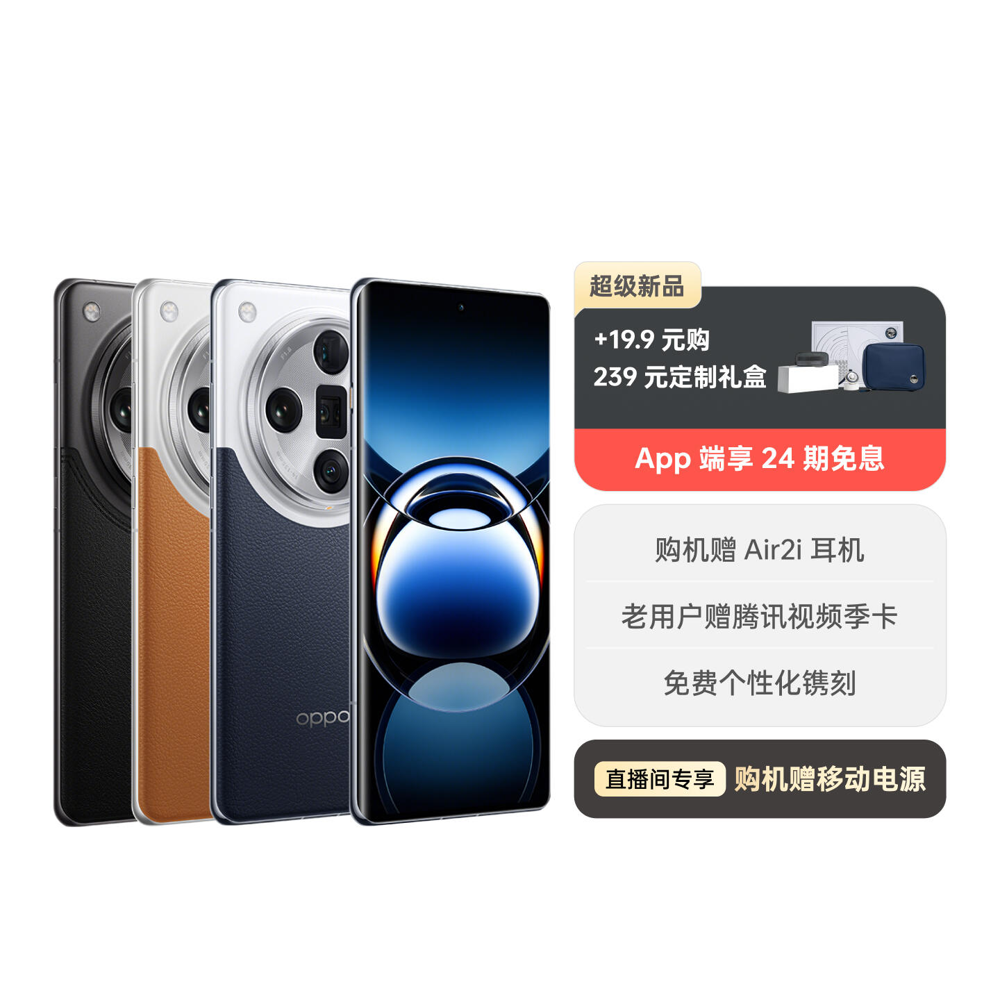

revisiones tecnicas
Teléfonos

Huawei
Realmente, los únicos teléfonos Huawei que vale la pena comprar son el Mate 60 Pro y el Mate 60, debido a su 5G y buen valor.

OnePlus
Para OnePlus, compra el OnePlus 12R (conocido como Ace 3 en China) o el OnePlus 12 por sus buenas especificaciones y precio razonable. Snapdragon 8 Gen 2 para el 12R, 8 Gen 3 para el 12, Aqua touch y un sistema de enfriamiento avanzado (además de 120hz para ambos teléfonos y buenas cámaras en el 12 pero no en el 12R) por 2400-5800 yuanes (y hasta 16GB de RAM para el 12R y 24GB para el 12) es perfecto.

Realme
Realme ofrece opciones de gran valor, como el GT5 Pro, pero hay algunos inconvenientes en el GT5 Pro, como la horrible cámara ultra ancha de 8MP. Sin embargo, tiene el último Snapdragon 8 Gen 3, hasta 16GB de RAM y 1TB de almacenamiento, y tiene una pantalla LTPO de 144hz. La versión de 1TB solo cuesta 4299 yuanes chinos, que son unos 900-1000 AUD. Así que, si no te importan las cámaras, el GT5 Pro es una buena opción.
Oppo
Compra solo el Find X7 Ultra. Es el único teléfono de marca OPPO que tiene el Snapdragon 8 Gen 3, pero su principal punto de venta son las cámaras. Sistema de cámara cuádruple de 50 MP más asociación con Hasselblad = lo mejor de lo mejor. Claro, no es demasiado barato, pero al menos es más barato que muchos iPhones y teléfonos Samsung. Y si quieres la mejor cámara de teléfono que existe, el Oppo Find X7 Ultra es una gran opción.
Vivo
Olvídate de Vivo. Usan chips MediaTek para sus teléfonos insignia, que son malos. Solo usa un chip Qualcomm y consideraré Vivo, pero están usando MediaTek.


iQOO
Solo compra el iQOO 12 y el iQOO 12 Pro. Snapdragon 8 Gen 3, buenas cámaras, genial.
Olvídate de Apple y Samsung. Son demasiado caros. Realmente, solo deberías comprar Apple por el ecosistema de Apple, y no hay razones para comprar Samsung.
Tabletas
Solo compra iPads. En serio, no te metas con tabletas Android. Y para iPads, recomendamos el iPad de 10ª generación, los modelos Air o Pro.
Portátiles
Lenovo es obviamente el mejor, pero si quieres ser aburrido, puedes comprar un portátil HP. Si quieres ser barato, elige un Chromebook DELL. (Advertencia: los Chromebooks son terribles). Y solo compra un Mac si quieres hacer edición de video o te gusta el ecosistema de Apple. Además, asegúrate siempre de conseguir una computadora AMD, nunca Intel para Windows.
Kirin 9000S
El Kirin 9000S es el chip usado en la serie Huawei Mate 60. No es demasiado rápido en comparación con Snapdragon en este momento, pero será mucho más rápido en el futuro. Si quieres apoyar la industria tecnológica china y desviar el acoso y juego injusto por parte de Estados Unidos, compra un Mate 60/Pro/Pro+.